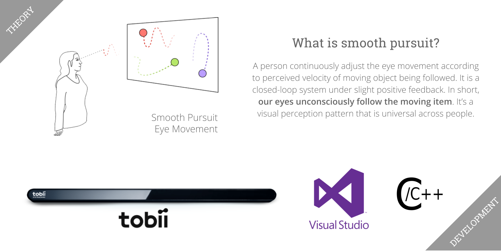

Eye tracking calibration for public displays.
In public space like streets, bus stops, and tourist centres, public displays play advertisements to passerbys frequently in scrolling manner.
It's easy to mount webcams on public displays to sense audience interests on advertisement content by eye tracking, in order to target customers.
However, people have different heights, they glance at the displays and pass by quickly. To guarantee reasoable eye-tracking accuracy in this situation, the problem is...
Calibrate audience gaze on public displays in real-time and non-intrusively using smooth pursuit eye movement.
